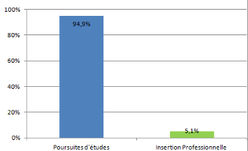

Département Informatique
Les données d'insertion
Données de la promotion 2015
Nous présentons ici les données collectées pour la promotion de DUT Informatique diplômée en juin 2015.
- Date de l'enquête : décembre 2015
- Procédé : enquête via email et téléphone
- Etudiants interrogés : 59 (la totalité des diplômés)
- Taux de réponse : 100%
Poursuites d'études ou insertion professionnelle ?
Comme chaque année, plus de 90% de poursuites d'études. Le DUT est un diplôme orienté vers l'insertion professionnelle des étudiants, mais, depuis la création des Licences Professionnelles en 2000, celle-ci se fait plutôt à Bac +3.

Poursuites d'études pour les étudiants du parcours Etudes Longues
28 étudiants ont choisi ce parcours. La part des Ecoles d'Ingénieurs revient à des taux plus habituels, mais on observe également des réorientations assez inhabituelles pour ce parcours.
Poursuites d'études pour les étudiants du parcours Professionnel
31 étudiants ont choisi ce parcours. Ici aussi, beaucoup de réorientations hors informatique.
Poursuites d'études : bilan sur toute la promotion
Ce graphique reprend simplement les données précédentes, sans la distiction de parcours.
Conclusion
Des résultats assez classiques en ce qui concerne l'informatique, mais des réorientations plutôt importantes.